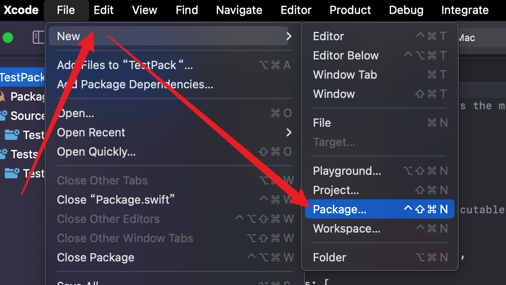

2023-02-20
使用SPM(Swift Package Manager)
修改于: 2023-02-20Swift Package Manager (SPM)
注解
源于AI, 有空整理
如果你想在 Swift Package Manager (SPM) 中导入 C 代码，你可以按照以下步骤进行操作：
- 创建 Swift 包
在你的项目目录中，打开终端或命令提示符。 使用 cd 命令导航到你的项目目录。 运行以下命令创建一个新的 Swift 包:
swift package init
或者直接在xcode创建
- 配置 Swift 包
- 在项目目录中，使用文本编辑器打开 Package.swift 文件。 在 Package.swift 文件中，配置 Swift 包的名称、目标和依赖项等信息。 在 targets 数组中，定义你的目标及其相关设置，例如模块名称、源文件路径等。
- 在 Swift 包中创建 C 源文件
- 在你的 Swift 包目录中，创建一个包含 C 代码的源文件，例如 YourPackage/Sources/YourPackage/CFile.c。 在 C 源文件中，编写你的 C 代码。
- 更新 Swift 包配置文件
在 Package.swift 文件中，将 C 源文件添加到 Swift 包的目标中。 修改 targets 数组中的目标配置，添加 C 源文件的路径:
// Package.swift // ... targets: [ .target( name: "YourPackage", dependencies: [], cSettings: [ .headerSearchPath("YourPackage/Sources/YourPackage"), .unsafeFlags(["-Xclang", "-fmodule-map-file=YourPackage/Sources/YourPackage/module.modulemap"]), ] ), // ... ],- 创建模块映射文件
在 Swift 包目录中，创建一个名为 module.modulemap 的模块映射文件， 例如 YourPackage/Sources/YourPackage/module.modulemap。 在模块映射文件中，指定你的 C 源文件的导入方式:
// module.modulemap module YourPackage [system] { header "CFile.h" export * }- 导入 C 代码
在你的 Swift 代码中，使用 import 语句导入你的 Swift 包。 现在你可以在 Swift 代码中使用导入的模块和其中的 C 代码:
// Swift 代码 import YourPackage // 使用导入的模块和其中的 C 代码
通过以上步骤，你可以使用 Swift Package Manager 导入和使用 C 代码。 确保在 Swift 包的配置文件中正确指定了 C 源文件的路径，并使用模块映射文件来定义导入方式。
请注意，使用 Swift Package Manager 导入 C 代码需要适当的配置和目录结构， 并且需要在模块映射文件中正确定义 C 源文件的导入方式。 确保你的 C 代码可以正确编译和链接，并在 Swift 代码中按照适当的方式使用。